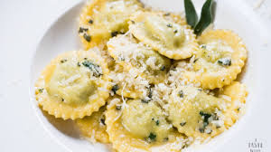

Sobre Nosotros
📍 Ubicación: Calle Roma 456, Zona Rosa
Pasta & Basta es un rincón italiano que ofrece los sabores más auténticos de Italia, con pastas artesanales y salsas tradicionales preparadas con ingredientes frescos.
Platos Típicos

Spaghetti Carbonara
Espaguetis preparados con una salsa cremosa de huevo, panceta y queso pecorino. Una receta clásica que nunca falla.

Lasagna Bolognese
Capas de pasta al horno con carne de res, salsa boloñesa, bechamel y queso derretido.

Ravioless de Ricotta y esppinaca
Ravioles rellenos de ricotta y espinaca, servidos con salsa de mantequilla y salvia o salsa napolitana.